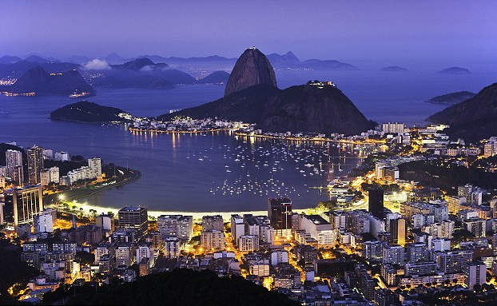

Бразилия
Авиа туры, Отдых с детьми, Пляжный отдых, Шопинг, Экзотика, Экскурсионные туры, Южная Америка

Самая большая страна Южной Америки и самая популярная среди туристов со всего мира. Благодаря счастливому сочетанию теплого, солнечного климата,. великолепия и богатства природы, замечательным пляжам и великолепным отелями, Бразилия по праву является одной из наиболее посещаемых стран.
Территория страны — 8512000 кв.км сплошь покрытых великолепными природными красотами. Ландшафты Бразилии разнообразны и бесподобны. От покрытых изумрудными лесами гор, до перламутровых теплых пляжей, от грандиозных водопадов и великих рек – до многомиллионных мегаполисов. На большей части территории Бразилии преобладает тропический и субтропический ландшафт, с присущей ему многокрасочностью, многозвучностью и буйством жизни. Бразилия граничит со всеми странами континента и омывается водами Атлантического океана на востоке.
Столица – Бразилия.
Государственный язык — португальский
Религия — основная часть населения исповедует римский католицизм. В Бразилии существует свобода совести.
Климат — теплый и влажный в течение всего года. С июня по сентябрь – длится сухой сезон, но это отнюдь не означает, что в эти месяцы в Бразилии не идут дожди. Бразилия – страна вечного лета и летний дождь здесь может выпасть в любой момент. Среднегодовые температуры — от +16 до + 40 градусов Цельсия. Пляжный сезон в Бразилии с конца ноября по конец марта.
Политическое устройство — Бразилия является демократической республикой с разделением законодательной, исполнительной и судебной властей. Город Бразилия — детище и уникальный эксперимент всемирного известного архитектора Оскара Нимейера. Этот город был задуман его творцом как «идеальный». Он был спроектирован от начала до конца в архитектурной мастерской и выстроен на пустом месте, как говориться с чистого листа. О том, что из этого вышло, могут судить все, кто за хочет посетить столицу Бразилии, одиноко расположенную в географическом центре страны.
Курорты
Рио де Жанейро – туристическая столица Бразилии, и одна из мировых туристических столиц. Такие названия как Копакабана, Маркиана, Корковадо, фавелла, карнавал, на слуху у большинства украинцев: Рио дэ Жанейро – город всемирно знаменитых достопримечательностей. Стиль его жизни – неповторимый и полный соблазнов. Рио де Жанейро – мечта не только известного героя советской классики, но и многих миллионов простых смертных. Реальность же этого города превосходит все ожидания: для многих он становится самым прекрасным местом в мире. Основные экскурсии, которые стоит посетить: обзорный тур по городу с посещением знаменитого холма Корковадо, подняться на который необходимо, для того, чтобы увидеть весь Рио, распростершийся у ног Христа-Спасителя. Сити Тур с посещением холма Сахарная Голова позволит вам увидеть панораму города с другой высокой точки. Оба эти сити тура вы можете совершить за 1 день, и таким образом познакомится со знаменитым городом и его главными достопримечательностями: пляжами, холмами, стадионом Маракана, историческим центром, лесом Теджука . Экскурсия на тропические острова популярная среди туристов. Это поездка на целый день на катере по островам, лежащим в Атлантическом океане недалеко от Рио дэ Жанейро. Великолепная природа и возможность искупаться и поплавать с маской делают эту экскурсию незабываемой.
Сан Паоло – мегаполис, население которого скоро достигнет 20 миллионов человек. Если вы мечтаете узнать, как людям живется в одном из самых больших городов планеты – Сао Паоло – ваш маршрут. Ангра дос Рейес – курортный городок в 120 км на юг от Рио де Жанейро. Необыкновенно живописное расположение курорта в узкой и глубокой бухте с сильно изрезанной береговой линией и более чем 300 островами – создали идеальное место для беззаботного отдыха. Красота природы и мягкий климат издавна привлекал в Ангару богатых жителей Рио, которые традиционно строили здесь свои загородные виллы, поднимая престиж и стоимость этого курорта.
Бузиос – курорт в 120 км. на север от Рио де Жанейро. Бузиос – полуостров с многочисленными бухтами и бухточками, над пляжами которых расположены отели на любой вкус и карман. Курорт стал быстро расти и набирать популярность с 60-х годов прошлого века, когда его «открыла» и влюбилась в него Бриджит Бордо. Сегодня благодарные жители Бузиоса установили актрисе памятник в центре города, на Руа дас Пьедрас, куда каждую ночь стекаются все жители и туристы для того, чтобы весело отпраздновать еще один прекрасный и беззаботный день. Красота природы и прекрасные пляжи, прогулки на яхте и подводная охота, экскурсия по пляжам и зажигательная ночная жизнь делают этот курорт одним их самых популярных в Бразилии.
Ресифе – курорт на севере Бразилии с великолепными пляжами: белоснежный мелкий песок и прозрачные теплые воды, красота коралловых рифов, возможность подводной охоты, виндсерфинга, сноркинга, ночных прогулок по морю на пирогах привлекают в Ресифе туристов со всего мира. Коста де Сауипе, – несомненно один из самых живописных уголков Бразилии. Город Сальвадор – историческая столица страны. Он и сейчас во многом живет вековыми традициями, познакомиться с которыми могут , туристы, отдыхающие на курорте Коста до Сауипе.